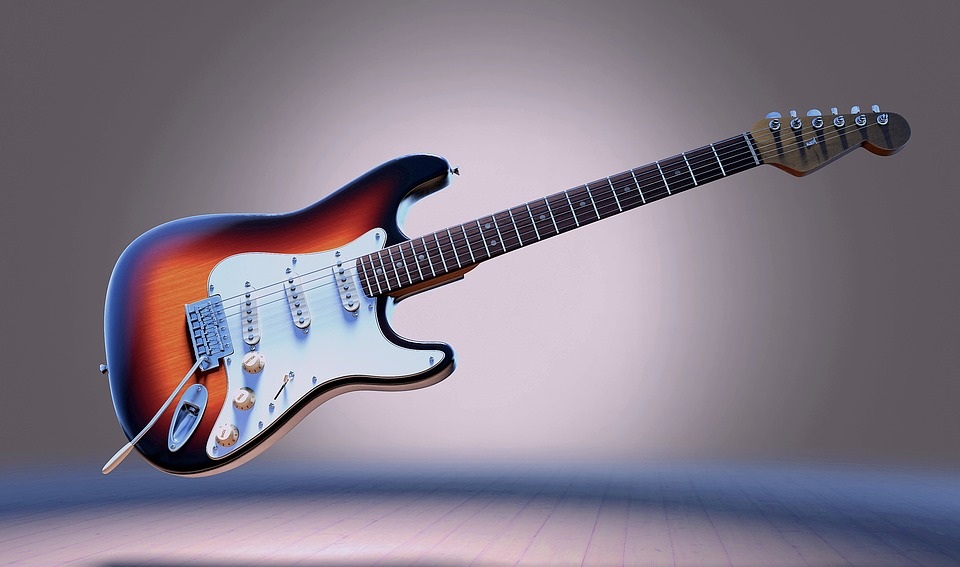

Bienvenido a Funk Musica, la mejor casa de música de Rosario!

Prouctos más populares:
Guitarra relic Gibson 50'

Guitarra replica de las originales Gibson de los años 50 con su sonido clasico y brillante caracteristico
Guitarra Fender Stratocaster

La guitarra Fender stratocaster es una de las más reconocidas a nivel mundial por su gran sonido y su versatibilidad.
Bateria basic

Esta es una batería excelente para comenzar, muy liviana y portable para llevar a donde sea.
Saxo Prelude

Intrumento de viento de alta calidad, origen frances, perfecto para uso profesional.